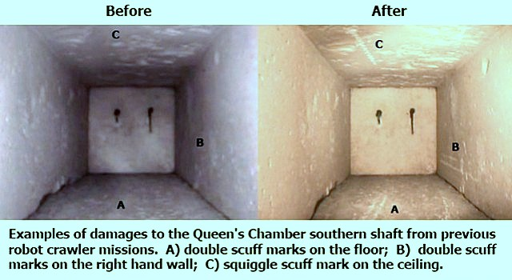

Зовсім недавно вчені виявили, що в піраміді Хеопса є не тільки вентиляційні шахти, а й потаємні кімнати, пробратися до яких людині неможливо. Вони кажуть, що вся піраміда Хеопса, висота якої 138 метрів, пронизана чотирма вузькими похилими ходами з перетином 20 сантиметрів, які вважали вентиляцією. Проте доведено, що дві шахти з гробниці фараона виходять назовні. Але навіщо запечатаній гробниці вентиляція? Не кажучи вже про те, що похилі шахти ускладнювали будівництво.
Ще одна загадка: дві шахти, які нібито мали бути вентиляцією для гробниці дружини фараона, не лише не виходять на поверхню, а й навіть не доходять до самої гробниці. Тобто це були запечатані ходи. Оскільки шахти дуже вузькі й тягнуться досить далеко, відповісти на запитання, що там всередині, вдалося щойно 1990 року. Спеціально зібраний робот проповз шахтою 63 метри і виявив перед собою кам’яні дверцята з двома металевими шпильками-ручками, які відчинити не зміг. У 2002 році інший робот дістався до дверцят, просвердлив отвір, просунув туди камеру і побачив, що за дверцятами на відстані 20 сантиметрів ще одні такі ж. До других дверцят свердла вже не вистачило.
Наука досі не визначила точної дати будівництва єгипетських пірамід - вчені розходяться навіть не на століття, а на тисячоліття. За традиційною версією, піраміди стоять уже 4,5 тисячі років. Такий вік визначили радіовуглецевим методом. При цьому вчені знайшли багато дивного, тож питання про вік пірамід залишилися відкритими.
| Лікоть (мех) | 52,3 см |
|---|---|
| Долоня (шесп) | 7,4 см (1/7 ліктя) |
| Палець(джеба) | 1,8 см (1/4 долоні) |
| Хата | 27,350 кв.м |
|---|---|
| Сечат (грец. арура) | 2735 кв.м. |
| Плече (ремен) | 1367 кв.м (половина сечата) |
| Четверть(хесеб) | 683 кв.м (половина плеча) |
| Син(са) | 341 кв.м (половина четверті) |